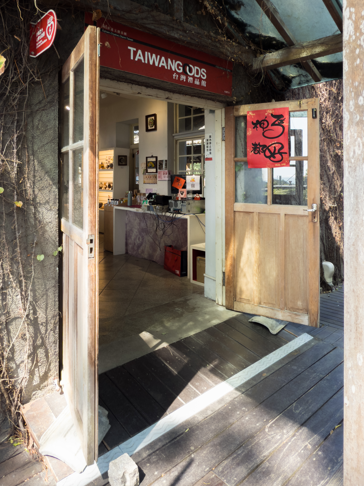
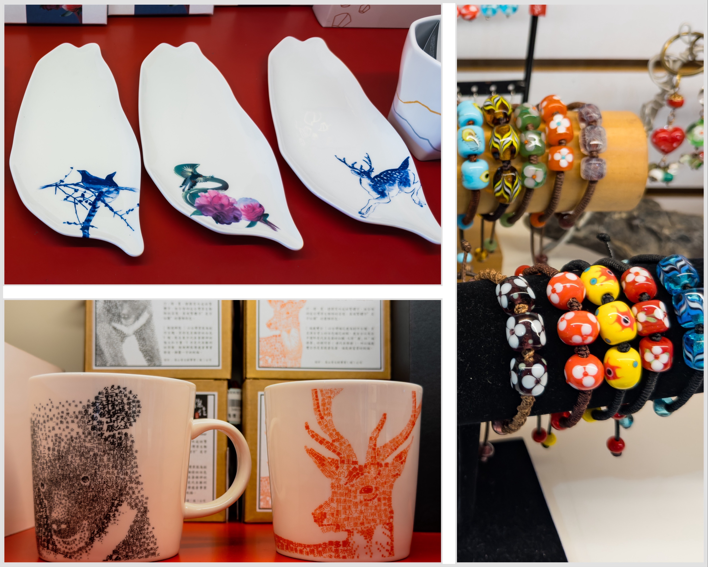

踏入敞亮的展廳，網格狀的磨石子地磚承載著光陰的重量。視線順著軌道燈的暖黃光暈延伸，純白色的陳列架上，一件件在地工藝品靜靜吐露著職人的心血。那尊立於前方的彩釉葫蘆瓶，在光線的折射下，泛著溫潤而飽滿的歲月光澤。
回望空間的邊際，半掩的老舊木門外，是午後斜陽與攀藤交織出的光影斑駁。紅紙春聯上瀟灑的墨跡，與門楣上的英文字樣，在微風中形成一種跨越世代的微妙對話，將戶外的自然氣息輕柔地引渡至室內。

走近細看，每一處細節都藏著屬於這片土地的敘事。白瓷葉盤上的青花鳥雀與小鹿靈動欲出，彷彿將山林間的呼吸烙印於釉面之上；手工燒製的琉璃珠串，則將鮮豔的色彩凝結於剔透之中。那些文字錯落的馬克杯排排站立，無聲地訴說著在地文化的故事。這些物件不只是靜態的器皿，更是在歷史建築的包裹下，沉澱出獨特美學的具象化呈現。